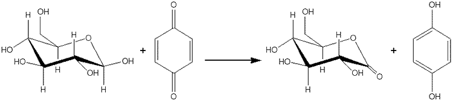
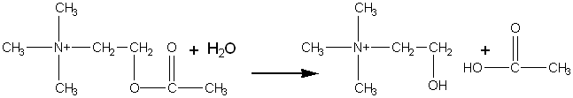
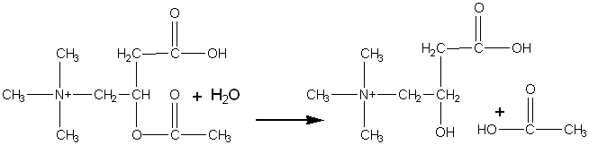

|
|
Use of 'unnatural' substratesMany enzymes are not totally specific for their natural substrates. Some have been found to catalyse reactions quite different from those given as the normal reactions and reflected in their name and EC number. Sometimes it necessary to place the enzyme in an unusual environment in order to display new activities. Thus, lipases act as transesterases in primarily non-aqueous environments (see Chapter 7). In other cases, changes in the environment are not necessary. Glucose oxidase (see reaction scheme [1.1]) is specific for its reducing substrate (D-glucose) but fairly non-specific in its choice of oxidant, normally molecular oxygen. It has been established that benzoquinone is also an effective electron-accepting substrate:  D-glucono-1,5-lactone + hydroquinone"> The product of this reaction, hydroquinone, is a valuable organic chemical, being used in the photographic industry and as an antioxidant. The reaction gives nearly 100% yields, with no possibility of the peroxide-induced inactivation which occurs using molecular oxygen as oxidant. Because of the ready solubility of benzoquinone and low solubility of molecular oxygen, the above reaction ([8.1]) can give productivity rates several times greater than the 'natural' reaction ([1.1]). Acetylcholinesterase (EC 3.1.1.7) normally catalyzes the hydrolysis of acetylcholine, the excitatory neurotransmitter, in the synaptic junctions of vertebrates.  choline + acetic acid">[8.2] The acetylcholinesterase from the electric eel has been found additionally to catalyse the stereospecific hydrolysis of acetyl-D-carnitine but not acetyl-L-carnitine.  D-Carnitine + acetic acid">
[8.3] Although the reaction involving acetyl-D-carnitine has a second-order rate (specificity) constant four orders of magnitude smaller than that utilising acetylcholine, the productivities at high substrate concentrations are comparable, the 'natural' substrate, acetylcholine, causing pronounced substrate inhibition which is not apparent with acetyl-D-carnitine. The 'unnatural' reaction is useful as it may be used in the preparation of L-carnitine, one of the vitamins that has numerous therapeutic applications; the D-isomer being biologically inactive. The enzyme can, therefore, be used in a manner similar to the way in which aminoacylase is used to resolve racemic amino acids. Chemically synthesised racemic DL-carnitine may be acetylated, using acetyl chloride, to give acetyl-DL-carnitine. The acetylcholinesterase may then be used to produce a mixture of acetyl-L-carnitine and D-carnitine that may be simply resolved by ion-exchange chromatography. The acetyl-L-carnitine is as biologically active as L-carnitine and may be used directly.
This page was established in 2004 and last updated by Martin
Chaplin |